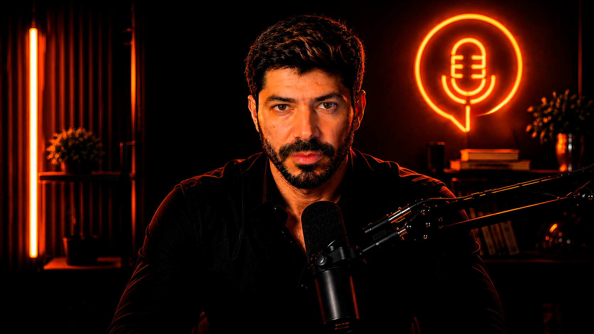

Ponto Sem Filtro TalkCast: opinião com responsabilidade e análise com profundidade
Ponto Sem Filtro
Conversa direta, inteligente e sem roteiro ensaiado.
Sociedade, comportamento, política, empreendedorismo, relacionamentos, liberdade e tudo o que impacta a vida real.
galeria de vídeos
Assista direto do site.
Quando o primeiro episódio for publicado no canal, ele aparece automaticamente aqui como destaque e também na galeria.
notícias
Atualizações sem filtro.
Textos, imagens e áudios publicados pela equipe do Ponto Sem Filtro aparecem aqui em destaque.
quem é Tiago Salomão
Gestor de TI, comunicador e criador do Ponto Sem Filtro.
Tiago conduz análises e conversas sobre temas sensíveis de forma direta, respeitosa e sem extremismo. A proposta do projeto é trazer opinião, reflexão e debate sem transformar tudo em gritaria de internet.
“ O objetivo não é impor verdades. É provocar reflexão.
descrição do canal
Conversas reais, opiniões fortes e reflexões sem filtro.
Aqui a conversa é direta, inteligente e sem roteiro ensaiado. Falamos sobre sociedade, comportamento, política, empreendedorismo, relacionamentos, liberdade, opinião e tudo o que impacta a vida real.
Sem gritaria, sem personagem e sem medo de dizer o que precisa ser dito.
“ Sem gritaria. Sem militância. Sem roteiro.
“ Pensar além da superfície ainda importa.
redes sociais